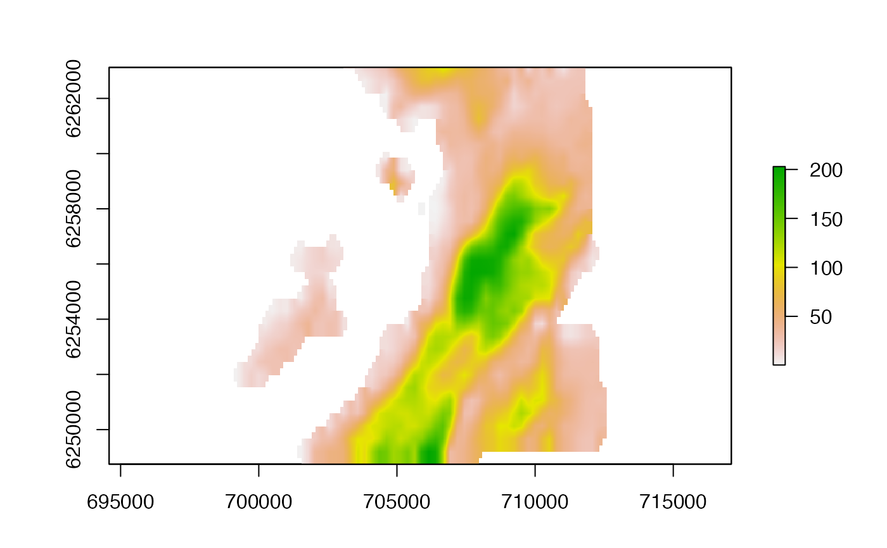
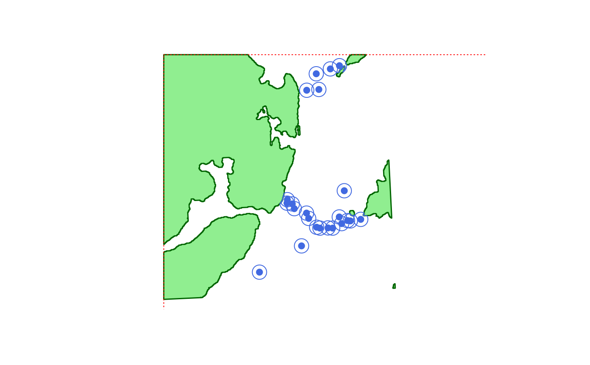
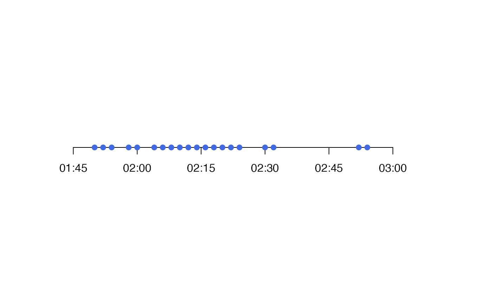

This function visually reconstructs the dynamics of an acoustic-container* (AC*) algorithm (i.e., ac or acdc).
To implement the function, an acdc_record-class object (record) from ac or acdc plus acdc_simplify that defines the outputs of the AC* algorithm is required. A SpatialPointsDataFrame that defines receiver locations and a matrix that defines the daily operational status of each receiver are also required.
For each time step, the function plots the probability surface, the receiver(s) at which the individual was detected and the acoustic containers, illustrating how the expansion, contraction and intersection of acoustic containers capture the set of possible locations for an individual through time.
acdc_plot_trace( record, plot = NULL, moorings, moorings_matrix, add_raster = list(), add_receiver_1 = list(pch = 4, lwd = 4, col = "darkgreen"), add_receiver_2 = list(pch = 4, lwd = 2, col = "darkorange"), add_receiver_3 = list(pch = 4, lwd = 1, col = "darkred"), add_receiver_n = list(pch = 4, lwd = 2), add_container_ap = list(col = "darkgreen"), add_container_an = list(col = "darkgreen"), add_container_b = list(col = "darkorange"), add_container_c = list(col = scales::alpha("forestgreen", 0.5), density = 20), add_coastline = list(), add_main = list(), ..., par_param = list(), png_param = list(), prompt = TRUE )
| record | A |
|---|---|
| plot | An integer vector that defines the time steps for which to make plots. If |
| moorings | A |
| moorings_matrix | A matrix that defines, for each day of the study (rows) and each receiver (columns), receivers' operational status (see |
| add_raster | A named list of arguments, passed to |
| add_receiver_1, add_receiver_2, add_receiver_3, add_receiver_n | Named lists of arguments, passed to |
| add_container_ap, add_container_an, add_container_b, add_container_c | Named lists of arguments that control the appearance of acoustic containers. ( |
| add_coastline | A named list of arguments, passed to |
| add_main | A named list of arguments, passed to |
| ... | Additional plot customisation options passed to |
| par_param | A named list of arguments, passed to |
| png_param | (optional) A named list of arguments, passed to |
| prompt | If |
The function returns, for each time step, a plot of the probability surface and acoustic containers.
ac and acdc implement the AC and ACDC algorithms and acdc_simplify simplifies the results. acdc_plot_record and acdc_animate_record provide additional visualisation routines.
Edward Lavender
#### Prepare example AC algorithm outputs with spatial files ## Define example time series id <- 25 acc <- dat_acoustics[dat_acoustics$individual_id == id, ] acc$timestamp <- lubridate::round_date(acc$timestamp, "2 mins") acc$key <- paste0(acc$timestamp, "-", acc$receiver_id) acc <- acc[!duplicated(acc$key), ][1:20, ] ## Define receiver locations ('moorings' SPDF) and activity status matrix # Receiver locations proj_wgs84 <- sp::CRS(SRS_string = "EPSG:4326") proj_utm <- sp::CRS(SRS_string = "EPSG:32629") xy <- sp::SpatialPoints(dat_moorings[, c("receiver_long", "receiver_lat")], proj_wgs84) xy <- sp::spTransform(xy, proj_utm) moorings <- sp::SpatialPointsDataFrame(xy, data = dat_moorings) # Daily activity status matrix as_POSIXct <- function(x) as.POSIXct(paste0(x, "00:00:00"), tz = "UTC") moorings_mat <- make_matrix_receivers(dat_moorings, delta_t = "days", as_POSIXct = as_POSIXct) ## Prepare grid # We will use a regular, relatively high resolution grid, # focused on a small area around the receivers at which the ID was detected grid <- raster::raster(raster::extent(dat_gebco), res = c(25, 25), crs = raster::crs(dat_gebco)) grid <- raster::resample(dat_gebco, grid) ext <- raster::extent( rgeos::gBuffer(moorings[moorings$receiver_id %in% acc$receiver_id, ], width = 10000) ) grid <- raster::crop(grid, ext) grid <- raster::trim(grid) raster::plot(grid)## Define detection containers/probability kernels # Define detection containers moorings <- raster::crop(moorings, grid) dat_container <- acs_setup_containers(xy = moorings, detection_range = 425, coastline = dat_coast, boundaries = ext, plot = TRUE, resolution = 10, verbose = TRUE)#> flapper::acs_setup_detection_containers() called (@ 2022-05-28 18:05:15)... #> ... Checking user inputs... #> ... Plotting background map of area...#> ... Making containers... #> ... Plotting containers on map... #> ... Processing containers... #> ... flapper::acs_setup_detection_containers() call completed (@ 2022-05-28 18:05:16) after ~0.01 minutes.# Define detection container overlaps containers_spdf <- do.call(raster::bind, plyr::compact(dat_containers)) containers_spdf@data <- dat_moorings dat_containers_overlaps <- get_detection_containers_overlap(containers = containers_spdf, services = NULL) # Define detection probability kernels calc_dpr <- function(x){ ifelse(x <= 425, stats::plogis(2.5 + -0.02 * x), 0) } dat_kernels <- acs_setup_detection_kernels(xy = moorings, services = NULL, containers = dat_containers, overlaps = dat_containers_overlaps, calc_detection_pr = calc_dpr, bathy = grid)#> flapper::acs_setup_detection_kernels() called (@ 2022-05-28 18:05:17)... #> ... Setting up function... #> ... Getting receiver-specific kernels (for detection)... #> #> ... ... For receiver 3 ... #> ... ... ... Isolating detection container ... #> ... ... ... Calculating distances from the receiver ... #> ... ... ... Calculating detection probability ... #> ... ... ... Processing kernel ... #> #> ... ... For receiver 9 ... #> ... ... ... Isolating detection container ... #> ... ... ... Calculating distances from the receiver ... #> ... ... ... Calculating detection probability ... #> ... ... ... Processing kernel ... #> #> ... ... For receiver 18 ... #> ... ... ... Isolating detection container ... #> ... ... ... Calculating distances from the receiver ... #> ... ... ... Calculating detection probability ... #> ... ... ... Processing kernel ... #> #> ... ... For receiver 21 ... #> ... ... ... Isolating detection container ... #> ... ... ... Calculating distances from the receiver ... #> ... ... ... Calculating detection probability ... #> ... ... ... Processing kernel ... #> #> ... ... For receiver 24 ... #> ... ... ... Isolating detection container ... #> ... ... ... Calculating distances from the receiver ... #> ... ... ... Calculating detection probability ... #> ... ... ... Processing kernel ... #> #> ... ... For receiver 26 ... #> ... ... ... Isolating detection container ... #> ... ... ... Calculating distances from the receiver ... #> ... ... ... Calculating detection probability ... #> ... ... ... Processing kernel ... #> #> ... ... For receiver 27 ... #> ... ... ... Isolating detection container ... #> ... ... ... Calculating distances from the receiver ... #> ... ... ... Calculating detection probability ... #> ... ... ... Processing kernel ... #> #> ... ... For receiver 30 ... #> ... ... ... Isolating detection container ... #> ... ... ... Calculating distances from the receiver ... #> ... ... ... Calculating detection probability ... #> ... ... ... Processing kernel ... #> #> ... ... For receiver 31 ... #> ... ... ... Isolating detection container ... #> ... ... ... Calculating distances from the receiver ... #> ... ... ... Calculating detection probability ... #> ... ... ... Processing kernel ... #> #> ... ... For receiver 33 ... #> ... ... ... Isolating detection container ... #> ... ... ... Calculating distances from the receiver ... #> ... ... ... Calculating detection probability ... #> ... ... ... Processing kernel ... #> #> ... ... For receiver 36 ... #> ... ... ... Isolating detection container ... #> ... ... ... Calculating distances from the receiver ... #> ... ... ... Calculating detection probability ... #> ... ... ... Processing kernel ... #> #> ... ... For receiver 37 ... #> ... ... ... Isolating detection container ... #> ... ... ... Calculating distances from the receiver ... #> ... ... ... Calculating detection probability ... #> ... ... ... Processing kernel ... #> #> ... ... For receiver 38 ... #> ... ... ... Isolating detection container ... #> ... ... ... Calculating distances from the receiver ... #> ... ... ... Calculating detection probability ... #> ... ... ... Processing kernel ... #> #> ... ... For receiver 43 ... #> ... ... ... Isolating detection container ... #> ... ... ... Calculating distances from the receiver ... #> ... ... ... Calculating detection probability ... #> ... ... ... Processing kernel ... #> #> ... ... For receiver 45 ... #> ... ... ... Isolating detection container ... #> ... ... ... Calculating distances from the receiver ... #> ... ... ... Calculating detection probability ... #> ... ... ... Processing kernel ... #> #> ... ... For receiver 48 ... #> ... ... ... Isolating detection container ... #> ... ... ... Calculating distances from the receiver ... #> ... ... ... Calculating detection probability ... #> ... ... ... Processing kernel ... #> #> ... ... For receiver 49 ... #> ... ... ... Isolating detection container ... #> ... ... ... Calculating distances from the receiver ... #> ... ... ... Calculating detection probability ... #> ... ... ... Processing kernel ... #> #> ... ... For receiver 50 ... #> ... ... ... Isolating detection container ... #> ... ... ... Calculating distances from the receiver ... #> ... ... ... Calculating detection probability ... #> ... ... ... Processing kernel ... #> #> ... ... For receiver 51 ... #> ... ... ... Isolating detection container ... #> ... ... ... Calculating distances from the receiver ... #> ... ... ... Calculating detection probability ... #> ... ... ... Processing kernel ... #> #> ... ... For receiver 53 ... #> ... ... ... Isolating detection container ... #> ... ... ... Calculating distances from the receiver ... #> ... ... ... Calculating detection probability ... #> ... ... ... Processing kernel ... #> #> ... ... For receiver 55 ... #> ... ... ... Isolating detection container ... #> ... ... ... Calculating distances from the receiver ... #> ... ... ... Calculating detection probability ... #> ... ... ... Processing kernel ... #> #> ... ... For receiver 56 ... #> ... ... ... Isolating detection container ... #> ... ... ... Calculating distances from the receiver ... #> ... ... ... Calculating detection probability ... #> ... ... ... Processing kernel ... #> #> ... ... For receiver 57 ... #> ... ... ... Isolating detection container ... #> ... ... ... Calculating distances from the receiver ... #> ... ... ... Calculating detection probability ... #> ... ... ... Processing kernel ... #> ... Getting receiver-specific inverse kernels... #> ... Getting area-wide kernels (for non-detection)... #> ... ... Get unique array designs... #> ... ... Get area wide kernels for each array design... #> #> ... ... ... For design 1/12... #> ... ... ... ... Extract detection probability kernels for active receivers... #> ... ... ... ... Combining detection kernels to calculate the background detection probability surfaces (this is a slow step)... #> #> ... ... ... For design 2/12... #> ... ... ... ... Extract detection probability kernels for active receivers... #> ... ... ... ... Combining detection kernels to calculate the background detection probability surfaces (this is a slow step)... #> #> ... ... ... For design 3/12... #> ... ... ... ... Extract detection probability kernels for active receivers... #> ... ... ... ... Combining detection kernels to calculate the background detection probability surfaces (this is a slow step)... #> #> ... ... ... For design 4/12... #> ... ... ... ... Extract detection probability kernels for active receivers... #> ... ... ... ... Combining detection kernels to calculate the background detection probability surfaces (this is a slow step)... #> #> ... ... ... For design 5/12... #> ... ... ... ... Extract detection probability kernels for active receivers... #> ... ... ... ... Combining detection kernels to calculate the background detection probability surfaces (this is a slow step)... #> #> ... ... ... For design 6/12... #> ... ... ... ... Extract detection probability kernels for active receivers... #> ... ... ... ... Combining detection kernels to calculate the background detection probability surfaces (this is a slow step)... #> #> ... ... ... For design 7/12... #> ... ... ... ... Extract detection probability kernels for active receivers... #> ... ... ... ... Combining detection kernels to calculate the background detection probability surfaces (this is a slow step)... #> #> ... ... ... For design 8/12... #> ... ... ... ... Extract detection probability kernels for active receivers... #> ... ... ... ... Combining detection kernels to calculate the background detection probability surfaces (this is a slow step)... #> #> ... ... ... For design 9/12... #> ... ... ... ... Extract detection probability kernels for active receivers... #> ... ... ... ... Combining detection kernels to calculate the background detection probability surfaces (this is a slow step)... #> #> ... ... ... For design 10/12... #> ... ... ... ... Extract detection probability kernels for active receivers... #> ... ... ... ... Combining detection kernels to calculate the background detection probability surfaces (this is a slow step)... #> #> ... ... ... For design 11/12... #> ... ... ... ... Extract detection probability kernels for active receivers... #> ... ... ... ... Combining detection kernels to calculate the background detection probability surfaces (this is a slow step)... #> #> ... ... ... For design 12/12... #> ... ... ... ... Extract detection probability kernels for active receivers... #> ... ... ... ... Combining detection kernels to calculate the background detection probability surfaces (this is a slow step)... #> ... Process detection probability kernels ... #> ... flapper::acs_setup_detection_kernels() call completed (@ 2022-05-28 18:05:28) after ~0.2 minutes.## Implement AC algorithm out_ac <- ac(acoustics = acc, step = 120, bathy = grid, detection_containers = dat_containers, detection_kernels = dat_kernels, detection_kernels_overlap = dat_containers_overlaps, mobility = 200, save_record_spatial = NULL )#>#> flapper::.acs_pl() called (@ 2022-05-28 18:05:28)... #> ... Checking user inputs... #> ... Processing movement time series... #> ... Plotting movement time series (for each chunk)...#> ... Calling .acs() to implement ACDC algorithm on one chunk... #> flapper::.acs() called (@ 2022-05-28 18:05:28)... #> | | | 0%... Initiating algorithm: moving over acoustic and internal ('archival') time steps... #> ... On acoustic time step ('timestep_detection') 1. #> ... ... On internal time step ('timestep_archival') 1. #> | |==== | 5%... On acoustic time step ('timestep_detection') 2. #> ... ... On internal time step ('timestep_archival') 1. #> | |======= | 11%... On acoustic time step ('timestep_detection') 3. #> ... ... On internal time step ('timestep_archival') 1. #> ... ... On internal time step ('timestep_archival') 2. #> ... ... ... Acoustic container is expanding... #> | |=========== | 16%... On acoustic time step ('timestep_detection') 4. #> ... ... On internal time step ('timestep_archival') 1. #> | |=============== | 21%... On acoustic time step ('timestep_detection') 5. #> ... ... On internal time step ('timestep_archival') 1. #> ... ... On internal time step ('timestep_archival') 2. #> ... ... ... Acoustic container is expanding... #> | |================== | 26%... On acoustic time step ('timestep_detection') 6. #> ... ... On internal time step ('timestep_archival') 1. #> | |====================== | 32%... On acoustic time step ('timestep_detection') 7. #> ... ... On internal time step ('timestep_archival') 1. #> | |========================== | 37%... On acoustic time step ('timestep_detection') 8. #> ... ... On internal time step ('timestep_archival') 1. #> | |============================= | 42%... On acoustic time step ('timestep_detection') 9. #> ... ... On internal time step ('timestep_archival') 1. #> | |================================= | 47%... On acoustic time step ('timestep_detection') 10. #> ... ... On internal time step ('timestep_archival') 1. #> | |===================================== | 53%... On acoustic time step ('timestep_detection') 11. #> ... ... On internal time step ('timestep_archival') 1. #> | |========================================= | 58%... On acoustic time step ('timestep_detection') 12. #> ... ... On internal time step ('timestep_archival') 1. #> | |============================================ | 63%... On acoustic time step ('timestep_detection') 13. #> ... ... On internal time step ('timestep_archival') 1. #> | |================================================ | 68%... On acoustic time step ('timestep_detection') 14. #> ... ... On internal time step ('timestep_archival') 1. #> | |==================================================== | 74%... On acoustic time step ('timestep_detection') 15. #> ... ... On internal time step ('timestep_archival') 1. #> | |======================================================= | 79%... On acoustic time step ('timestep_detection') 16. #> ... ... On internal time step ('timestep_archival') 1. #> ... ... On internal time step ('timestep_archival') 2. #> ... ... ... Acoustic container is expanding... #> ... ... On internal time step ('timestep_archival') 3. #> ... ... ... Acoustic container is constant ... #> | |=========================================================== | 84%... On acoustic time step ('timestep_detection') 17. #> ... ... On internal time step ('timestep_archival') 1. #> | |=============================================================== | 89%... On acoustic time step ('timestep_detection') 18. #> ... ... On internal time step ('timestep_archival') 1. #> ... ... On internal time step ('timestep_archival') 2. #> ... ... On internal time step ('timestep_archival') 3. #> ... ... On internal time step ('timestep_archival') 4. #> ... ... On internal time step ('timestep_archival') 5. #> ... ... On internal time step ('timestep_archival') 6. #> ... ... On internal time step ('timestep_archival') 7. #> ... ... On internal time step ('timestep_archival') 8. #> ... ... On internal time step ('timestep_archival') 9. #> ... ... On internal time step ('timestep_archival') 10. #> | |================================================================== | 95%... On acoustic time step ('timestep_detection') 19. #> ... ... On internal time step ('timestep_archival') 1. #> | |======================================================================| 100% #> ... Movement over acoustic and internal ('archival') time steps has been completed. #> ... flapper::.acs() call completed (@ 2022-05-28 18:05:30) after ~0.03 minutes. #> ... flapper::.acs_pl() call completed (@ 2022-05-28 18:05:30) after ~0.03 minutes.#>#>#### Example (1): Implement the function with default arguments if(interactive()){ acdc_plot_trace(record, 1:10, moorings, moorings_mat) } #### Example (2): Customise plot via add_* arguments and ... if(interactive()){ acdc_plot_trace(record, 1:10, moorings, moorings_mat, add_raster = list(plot_method = raster::plot, legend = FALSE), add_coastline = list(x = dat_coast, col = scales::alpha("dimgrey", 0.5)), xlim = c(699000, 711000), ylim = c(6250000, 6269500)) } #### Example (3): Save plots to file via the png_param argument con <- paste0(tempdir(), "/acdc_trace/") if(!dir.exists(con)) dir.create(con) acdc_plot_trace(record, 1:10, moorings, moorings_mat, add_raster = list(plot_method = raster::plot, legend = FALSE), add_coastline = list(x = dat_coast, col = scales::alpha("dimgrey", 0.5)), xlim = c(699000, 711000), ylim = c(6250000, 6269500), png_param = list(filename = con), prompt = FALSE) list.files(con)#> [1] "1.png" "10.png" "11.png" "12.png" "13.png" "14.png" "15.png" "16.png" #> [9] "17.png" "18.png" "19.png" "2.png" "20.png" "21.png" "22.png" "23.png" #> [17] "24.png" "25.png" "26.png" "27.png" "28.png" "29.png" "3.png" "30.png" #> [25] "31.png" "4.png" "5.png" "6.png" "7.png" "8.png" "9.png"